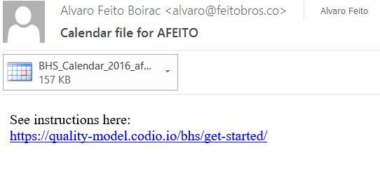
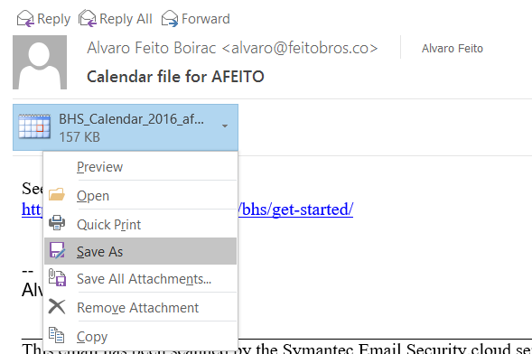
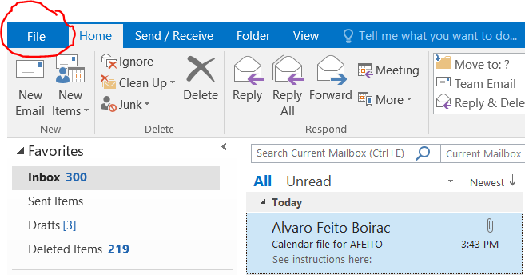
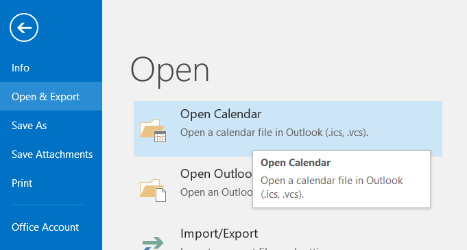
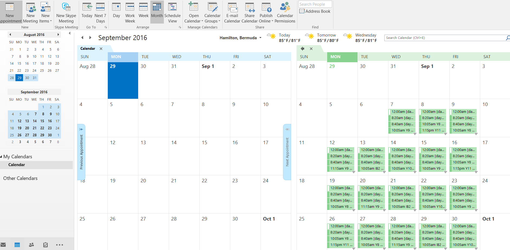
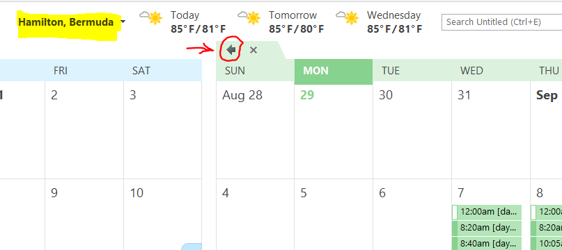
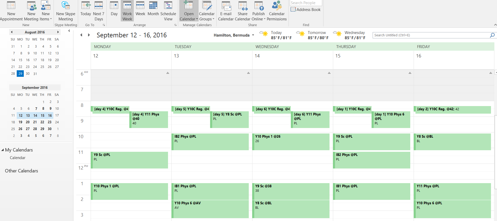

Steps to Import to Outlook:
- Instructions for Outlook Calendar:
- On your work laptop, open your Outlook email
- Find the email where you recieved the BHS_Calendar_2016_Yourname.ics file. It should show an attachment like this one:

- Save that file to a temporary location (for example your desktop):

- At the top-left of your email client, click on File:

- Select Open and Export and then Open Calendar.. Then select the BHS_Calendar_2016_Yourname.ics file you just downloaded.

- Your calendar should load and appear side by side with your default calendar.

- To get a better view, change a few settings:
- Make sure your timezone is Bermuda
- Click on the left arrow to expand the calendar
- Change from monthly view to "work week"

- Congratulations! You're ready!

- Instructions for importing to Apple Calendar
- Instructions for importing to Google Calendar